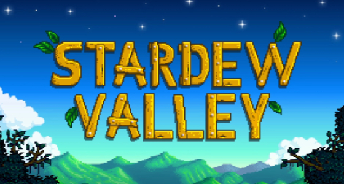

Terraria


WorldBox

Stardew Valley, çiftçilik, keşif ve sosyal etkileşimi bir araya getiren popüler bir indie simülasyon oyunudur. PC platformunda oynayabileceğiniz bu yapımda, şehir hayatını geride bırakıp size miras kalan eski çiftliği yeniden canlandırmaya çalışırsınız. Oyuncular; tarım yapma, hayvan yetiştirme, balık tutma, maden keşfetme ve kasaba halkıyla ilişkiler kurma gibi birçok aktiviteyle kendi hikayesini oluşturur. Mevsim sistemi, etkinlikler ve karakterlerle kurulan bağlar oyunun ilerleyişini doğrudan etkiler. “Stardew Valley” sayfasında oyunun detaylarını inceleyebilir ve benzer simülasyon & indie oyunları keşfedebilirsiniz. Eğer sakin ama derinlikli bir PC oyunu arıyorsanız, Stardew Valley sizi bekliyor. BallasNet’te çiftliğinizi kurmaya başlayın.
Stardew Valley, bağımsız bir çiftçilik ve yaşam simülasyonu oyunudur. Oyunda kendinize miras kalan eski bir çiftliği yöneterek tarım yapabilir, hayvan besleyebilir, balık tutabilir ve kasabadaki diğer karakterlerle etkileşim kurabilirsiniz. Mevsimlere göre değişen aktiviteler, keşfedilecek madenler ve karakter odaklı hikaye ile Stardew Valley, simülasyon türünü seven oyuncular için keyifli ve derinlikli bir deneyim sunar.
Stardew Valley’i kurmak için sayfadaki 1, 2 veya 3. linklerden birine tıklayarak oyunu indirin. İndirilen dosyayı açın ve "Stardew Valley.exe" dosyasını çalıştırarak oyuna başlayabilirsiniz. Bu yöntemle Stardew Valley’i kolayca PC’nize yükleyebilirsiniz.
Stardew Valley oyun dosyaları kapsamlı bir virüs taramasından geçirilmiştir. Dosyalar tarandı ve herhangi bir zararlı yazılıma rastlanmadı. Oyunu güvenle PC’nizde oynayabilirsiniz.
Oyunun disk boyutu yaklaşık 1 GB civarındadır. Önerilen alan 2 GB’dır. Düşük depolama alanına sahip bilgisayarlar için de uygundur.
Windows 7, 8, 10 ve 11 ile uyumludur. Minimum sistem gereksinimlerini karşılayan hemen her PC’de açılır.
BallasNet üzerinden indirdiğiniz sürümde Türkçe zaten hazır gelir. Ekstra yama veya ayar gerekmez, oyunu başlattığınızda dil seçeneklerinde Türkçe’yi bulabilirsiniz.
Üç farklı depolama linki (Drive, Mega ve Torrent) bulunur. Hangisi daha hızlı açılıyorsa onu kullanabilirsiniz, içerik aynıdır.
BallasNet’teki dosyalar ücretsizdir. Resmi satın alma için Steam linkini de sayfada bulabilirsiniz.
Hayır. Tüm dosyalar taranmış ve temiz olarak işaretlenmiştir. Hiçbir virüs/zararlı yazılım bulunmamaktadır.